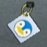

12 |
Objetos y unidades especiales |
 |

Para mantener a salvo las gemas, deberás utilizar objetos y unidades especiales para complementar tu ejército de osos.
Obtener objetos y unidades especiales
Utilizar objetos y unidades especiales
Tipos de objetos y unidades especiales

Marcapáginas: Los tres tipos de marcapáginas son Ardiente, Torrencial y Glacial. Cada uno quema, inunda y congela respectivamente.

Ranas: Disparan agua a enemigos lejanos.
Miniositos: ¡Lo que les falta de fuerza, lo ganan en número!
Farolillo: Estas calabazas pueden hacer arder a los enemigos cercanos. También pueden activar bombas.  Pingüinos: Estos animales pueden congelar a los enemigos cercanos. |
 Hechizos: Hay varios tipos de hechizos elementales como fuego, agua y hielo, así como otros que mejorarán tus unidades. Los hechizos de fuego se pueden utilizar para quemar toda una zona. Los hechizos de agua se pueden utilizar para ralentizar los osos malosos o apagar enemigos de fuego. Los de hielo congelarán todo lo que haya en el área. Los hechizos elementales son muy útiles, pero debes ir con cuidado ya que también afectarán a cualquier oso tuyo que se encuentre en la zona. Por último, las energibolas sirven para fortalecer a todos tus osos en el área de efecto del hechizo.
Hechizos: Hay varios tipos de hechizos elementales como fuego, agua y hielo, así como otros que mejorarán tus unidades. Los hechizos de fuego se pueden utilizar para quemar toda una zona. Los hechizos de agua se pueden utilizar para ralentizar los osos malosos o apagar enemigos de fuego. Los de hielo congelarán todo lo que haya en el área. Los hechizos elementales son muy útiles, pero debes ir con cuidado ya que también afectarán a cualquier oso tuyo que se encuentre en la zona. Por último, las energibolas sirven para fortalecer a todos tus osos en el área de efecto del hechizo. |
 |
 |